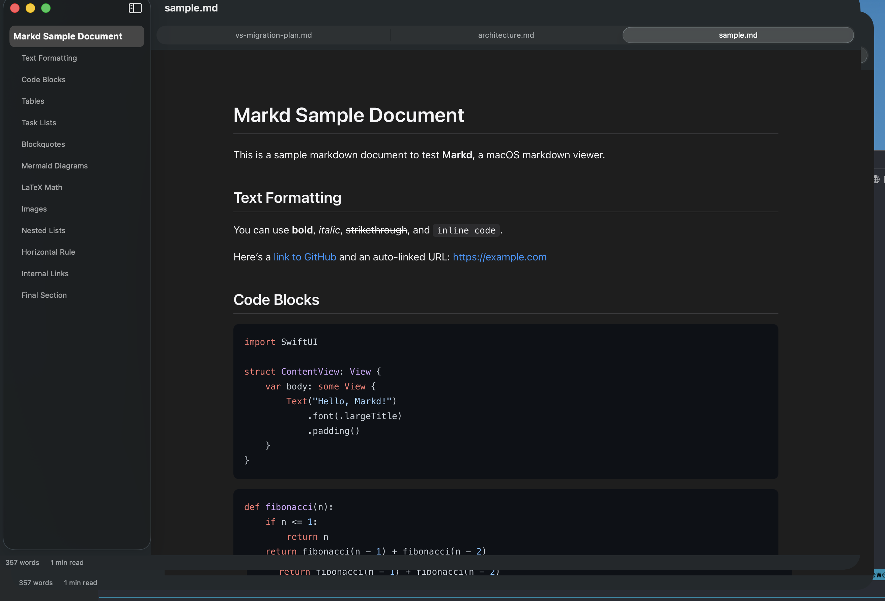

A native macOS viewer for markdown with Mermaid diagrams, LaTeX math, syntax highlighting, and live reload. No Electron. No bloat.

Flowcharts, sequence diagrams, and more render inline with zoom, pan, and full-screen view. Dark mode aware.
Inline and display math via KaTeX. Write $E=mc^2$ and see it rendered beautifully.
Edit in your favorite editor. Markd watches the file and refreshes instantly on save.
180+ languages with light and dark themes. GitHub-style code blocks.
Auto-generated sidebar with scroll spy. Click to navigate, arrow keys to browse. Highlights the current section as you scroll.
Follows system appearance automatically. Every element — code blocks, diagrams, math — adapts seamlessly.
Cmd+F brings up a find bar with match highlighting and keyboard navigation.
Cmd+P to print. Export to standalone HTML. Copy rendered HTML to clipboard.
Download the DMG, drag to Applications, done.